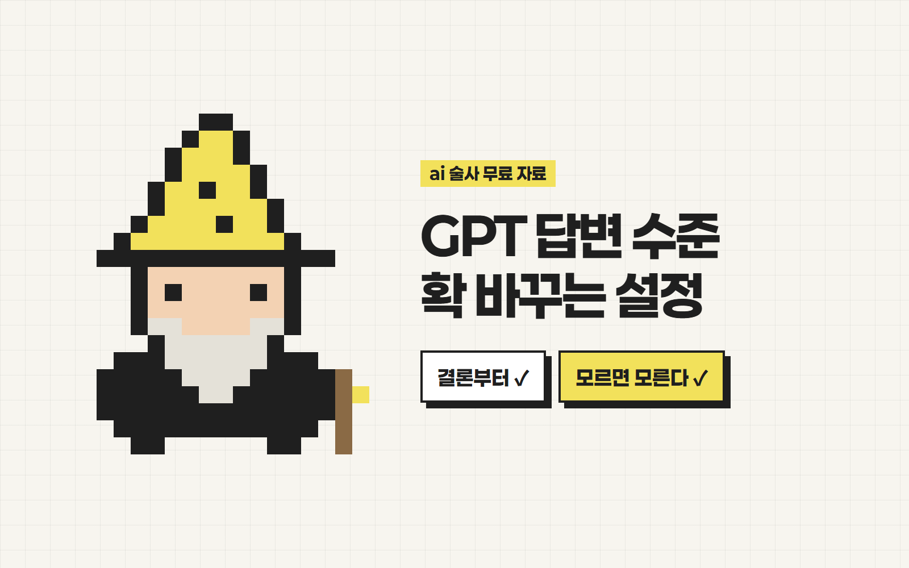
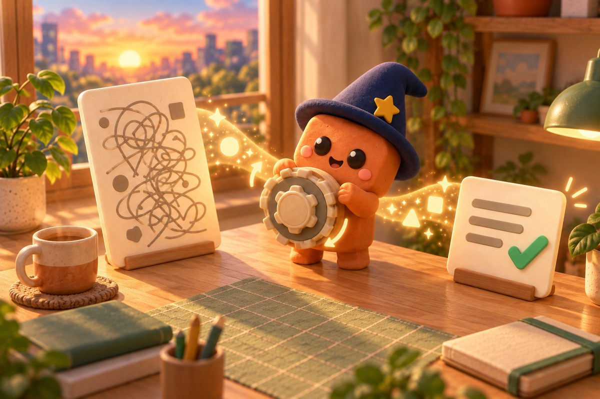

안녕하세요 ai 술사 성준입니다.
GPT 답변 수준
확 바꾸는 설정
GPT 특징, 뭐 물어보면
'좋은 질문이에요'로 시작해서
뻔한 말만 늘어놓죠 ㅋㅋ
설정에 지침 하나만 넣어놓으면
답변 수준이 달라집니다!

준비물
- 1ChatGPT (무료도 가능)
- 2아래 기본 지침 (복사 버튼)
기본 지침 복사하기
제가 실제로 쓰는 버전이에요.
- 1아래 지침을 복사해요.
[답변 방식] - 칭찬, 인사, 서론 없이 결론부터 말해. - 핵심 → 근거 → 다음에 할 일 순서로 정리해. - 답변 길이는 질문 수준에 맞춰. 짧게 물으면 짧게 답해. - 선택지가 여러 개면 하나를 추천하고, 이유를 한 줄로 말해. [정확성] - 모르면 모른다고 해. 추측이면 [추측]이라고 표시해. - 최신 정보나 수치는 검색해서 확인하고 출처를 붙여. - 내 말이 틀렸으면 맞장구치지 말고 바로잡아. [질문 다루기] - 내 질문이 애매하면 답하기 전에 1~2개만 되물어. - 전문 용어는 쉬운 말로 풀어 쓰고, 같은 말을 반복하지 마. - 한국어로 답해.
필요 없는 줄은 지우고, 원하는 규칙은 한 줄씩 추가해도 돼요.
사용자 지정 지침에 붙여넣기
한 번만 해두면 모든 새 대화에 적용돼요.
- 1프로필 → 설정으로 들어가요.
- 2개인 맞춤 설정 → 사용자 지정 지침을 눌러요.
- 3복사한 지침을 붙여넣고 저장해요.
메뉴 이름은 업데이트로 바뀔 수 있어요. 예전 이름은 '맞춤형 지침'이에요.
새 대화에서 확인하기
기존 대화가 아니라 새 대화를 열어야 적용돼요.
- 1새 대화를 열어요.
- 2아래 문장을 그대로 보내봐요.
이번 주말에 할 만한 거 추천해줘
서론 없이 결론부터 나오거나, 먼저 되물어보면 성공!
나한테 맞게 한 줄 더하기
내 상황을 알려주면 답변이 더 정확해져요.
- 1지침 맨 아래에 나에 대한 한 줄을 추가해요.
- 나는 [직업/하는 일]이고, 주로 [용도]에 GPT를 써.
예: 나는 마케터고, 주로 광고 문구랑 보고서에 GPT를 써.
주의
- 지침을 넣어도 AI가 100% 정확해지지는 않아요. 숫자·법·건강 관련 내용은 꼭 원문을 직접 확인해주세요.
이렇게 써먹어요
- 보고서·회의록 정리할 때 결론부터 받기
- 애매하게 물어도 되물어줘서 헛답변 줄이기
- 검색이 필요한 질문은 출처까지 한 번에
궁금하신 점은 DM으로 편하게 물어봐 주세요 🪄
From. ai 술사 | 성준
ai술사의 모든 꿀팁 확인하기!